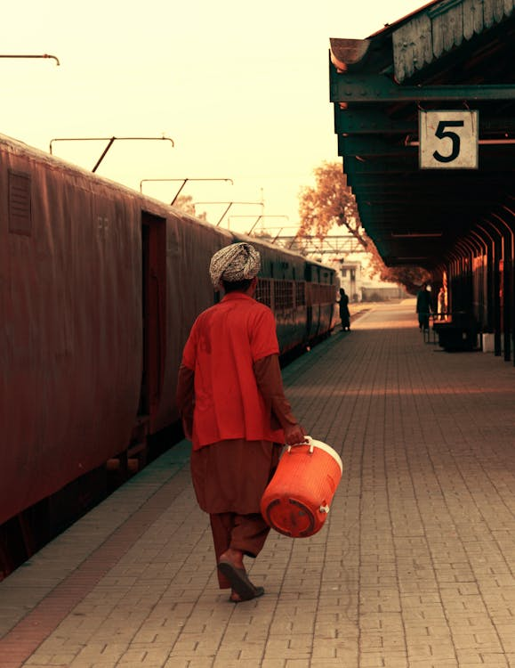

Donate
Your gift funds relief drives, scholarships and youth counselling. Every rupee reaches families directly.
Where your support goes

Emergency relief
Cash, ration bags and essentials for families hit by floods, cloudbursts and hardship.

Youth & education
Career counselling, skills training and scholarship pathways for young people.

Community projects
Tree plantation, water coolers in summer, and dialogue that builds harmony.